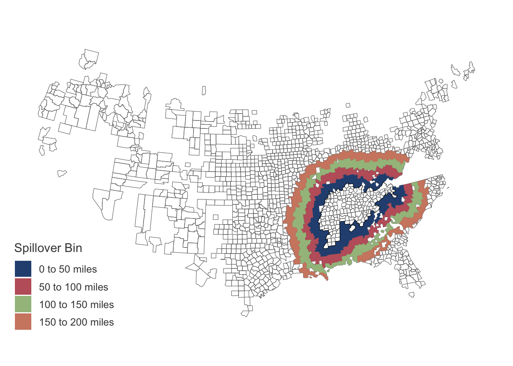

library(tidyverse, warn.conflicts = FALSE)
library(fixest)
library(haven)
library(sf)
library(Rcpp)
library(RcppArmadillo)
library(kfbmisc)
# Helper functions
source(here::here("code/TVA/helpers.R"))
source(here::here("code/TVA/helper-conley.R"))
h_w_ratio <- 9 / 16Kline and Moretti (2014)
Replicate Table 3 of Kline and Moretti (2014) with extension that includes spillover control using rings method
df <- read_dta(here::here("data/tva/build.dta")) |>
mutate(
fips = sprintf("%05d", fipstat * 1000 + fipcnty)
)
counties <- sf::read_sf(here::here("data/2010_county.geojson")) |>
mutate(fips = paste0(STATEFP10, COUNTYFP10)) |>
select(state = STATEFP10, county = COUNTYFP10, fips) |>
rmapshaper::ms_simplify(keep = 0.05)The legacy packages maptools, rgdal, and rgeos, underpinning this package
will retire shortly. Please refer to R-spatial evolution reports on
https://r-spatial.org/r/2023/05/15/evolution4.html for details.
This package is now running under evolution status 0 # Create TVA shape
tva_fips <- scan(here::here("data/tva/tvacounties.txt"), character())
tva <- counties |>
filter(fips %in% tva_fips) |>
summarize()
dist_mat <- st_distance(counties |> st_point_on_surface(), tva)Warning: st_point_on_surface assumes attributes are constant over geometriescounties$dist_to_tva <- as.vector(units::drop_units(units::set_units(dist_mat, "mi")))
setFixest_fml(
..controls = ~ lnelevmax + lnelevrang + lnarea + lnpop20 + lnpop20sq + lnpop30 + lnpop30sq + popdifsq + agrshr20 + agrshr20sq + agrshr30 + agrshr30sq + manufshr20 + manufshr30 + lnwage20 + lnwage30 + lntwage30 + lnemp20 + lnemp30 + urbshare20 + urbshare30 + lnfaval20 + lnfaval30 + lnmedhsval30 + lnmedrnt30 + white20 + white20sq + white30 + white30sq + pctil20 + pctil30 + urate30 + fbshr20 + fbshr30 + PRADIO30 + nowage20dum + nowage30dum + notwage30dum
)
controls <- c("lnelevmax", "lnelevrang", "lnarea", "lnpop20", "lnpop20sq", "lnpop30", "lnpop30sq", "popdifsq", "agrshr20", "agrshr20sq", "agrshr30", "agrshr30sq", "manufshr20", "manufshr30", "lnwage20", "lnwage30", "lntwage30", "lnemp20", "lnemp30", "urbshare20", "urbshare30", "lnfaval20", "lnfaval30", "lnmedhsval30", "lnmedrnt30", "white20", "white20sq", "white30", "white30sq", "pctil20", "pctil30", "urate30", "fbshr20", "fbshr30", "PRADIO30", "nowage20dum", "nowage30dum", "notwage30dum")Create spillover variables
# lat-long of county centroids
counties[, c("long", "lat")] <- counties |>
st_transform(4326) |>
st_point_on_surface() |>
st_coordinates()Warning: st_point_on_surface assumes attributes are constant over geometriesWarning in st_point_on_surface.sfc(st_geometry(x)): st_point_on_surface may not
give correct results for longitude/latitude data# Create spillover variable donuts
df_reg <- df |>
left_join(counties |> st_drop_geometry(), by = "fips") |>
mutate(
tva_0_100 = !tva & dist_to_tva >= 0 & dist_to_tva < 100,
tva_0_50 = !tva & dist_to_tva >= 0 & dist_to_tva < 50,
tva_50_100 = !tva & dist_to_tva >= 50 & dist_to_tva < 100,
tva_100_150 = !tva & dist_to_tva >= 100 & dist_to_tva < 150,
tva_150_200 = !tva & dist_to_tva >= 150 & dist_to_tva < 200
)Logit for subsample
tva_logit <- fixest::femlm(tva ~ ..controls, data = df_reg, family = "logit")NOTE: 122 observations removed because of NA values (RHS: 122).df_reg <- df_reg |>
mutate(
phat = predict(tva_logit, df_reg),
keep = phat > quantile(phat, probs = c(0.25), na.rm = TRUE)
)Figure of counties and spillover variable
fips_in_sample <- df_reg |>
drop_na(!!c(controls)) |>
filter(keep == TRUE) |>
pull(fips)
rings <- counties |>
filter(fips %in% fips_in_sample) |>
mutate(
spill = case_when(
0 < dist_to_tva & dist_to_tva <= 50 ~ "0 to 50 miles",
50 < dist_to_tva & dist_to_tva <= 100 ~ "50 to 100 miles",
100 < dist_to_tva & dist_to_tva <= 150 ~ "100 to 150 miles",
150 < dist_to_tva & dist_to_tva <= 200 ~ "150 to 200 miles",
)
) |>
filter(!is.na(spill)) |>
group_by(spill) |>
summarize()
rings$spill <- factor(rings$spill, levels = c("0 to 50 miles", "50 to 100 miles", "100 to 150 miles", "150 to 200 miles"))nord_palette <- c("#295080", "#BF616A", "#A3BE8C", "#D08770")
grey_palette <- c("grey30", "grey50", "grey70")
(spillover_map <- ggplot() +
geom_sf(
data = counties |> filter(fips %in% fips_in_sample),
fill = NA, color = "grey40", size = 0.5
) +
geom_sf(data = rings, aes(fill = spill), color = NA) +
# Outline of TVA
geom_sf(data = tva, color = "Black", fill = NA, size = 1.1) +
coord_sf(datum = NA) +
scale_fill_manual(values = nord_palette, na.translate = FALSE) +
theme_kyle(base_size = 14) +
kfbmisc::theme_map() +
theme(
legend.position = "inside",
legend.position.inside = c(0.1, 0.15)
) +
labs(fill = "Spillover Bin"))
kfbmisc::tikzsave(
"figures/tva/tva-sample.pdf",
spillover_map,
width = 8, height = 4.5
)
kfbmisc::tikzsave(
"figures/tva/tva-sample_slides.pdf",
spillover_map,
width = 8, height = 8 * h_w_ratio
)Regression
df_reg <- df_reg |>
mutate(
D_lnpop = winsorize_x((lnpop2000 - lnpop40) / 6, 0.01),
D_lnwage = winsorize_x((lnwage2000 - lnwage40) / 6, 0.01),
D_lnagr = winsorize_x((lnagr2000 - lnagr40) / 6, 0.01),
D_lnmanuf = winsorize_x((lnmanuf2000 - lnmanuf40) / 6, 0.01),
D_lnvfprod = winsorize_x((lnvfprod2000 - lnvfprod40) / 6, 0.01),
D_lnmedfaminc = winsorize_x((lnmedfaminc2000 - lnmedfaminc50) / 5, 0.01),
D_lnfaval = winsorize_x((lnfaval2000 - lnfaval40) / 6, 0.01),
D_lnpop_short = winsorize_x((lnpop60 - lnpop40) / 2, 0.01),
D_lnwage_short = winsorize_x((lnwage60 - lnwage40) / 2, 0.01),
D_lnagr_short = winsorize_x((lnagr60 - lnagr40) / 2, 0.01),
D_lnmanuf_short = winsorize_x((lnmanuf60 - lnmanuf40) / 2, 0.01),
D_lnvfprod_short = winsorize_x((lnvfprod60 - lnvfprod40) / 2, 0.01),
D_lnmedfaminc_short = winsorize_x((lnmedfaminc60 - lnmedfaminc50) / 1, 0.01),
D_lnfaval_short = winsorize_x((lnfaval60 - lnfaval40) / 2, 0.01)
)1940-2000
dep_names <- c(
"Agricultural employment" = "D_lnagr",
"Manufacturing employment" = "D_lnmanuf"
)
table_tex <- ""
for (y in dep_names) {
outcome_name <- names(dep_names[dep_names == y])
cli::cli_h2("{outcome_name}")
temp <- df_reg |>
# Drop NAs from data
drop_na(!!c(controls, y, "tva_0_100")) |>
filter(keep == 1)
# Diff-in-Diff with Controls -----------------------------------------------
formula_controls <- as.formula(paste0(y, " ~ tva + ", paste(controls, collapse = " + ")))
reg_controls <- fixest::feols(formula_controls, data = temp, demeaned = TRUE)
X <- reg_controls$X_demeaned
e <- reg_controls$residuals
coords <- as.matrix(temp[, c("lat", "long")])
# 1 mi = 1.60934 km
dist_cutoff <- 200 * 1.60934
cov_controls <- conley_ses(X, e, coords, dist_cutoff)$Spatial
# Diff-in-Diff with Spillovers ---------------------------------------------
formula_controls_spill <- as.formula(paste0(y, " ~ tva + tva_0_50 + tva_50_100 + tva_100_150 + tva_150_200 + ", paste(controls, collapse = " + ")))
reg_spill <- fixest::feols(formula_controls_spill, data = temp, demeaned = TRUE)
X <- reg_spill$X_demeaned
e <- reg_spill$residuals
coords <- as.matrix(temp[, c("lat", "long")])
# 1 mi = 1.60934 km
dist_cutoff <- 200 * 1.60934
cov_spill <- conley_ses(X, e, coords, dist_cutoff)$Spatial
# Create row
row <- ""
row_se <- ""
# Outcome Variable
row <- paste0(row, str_pad(outcome_name, 28, "right"), "& ")
row_se <- paste0(row_se, str_pad("", 28, "right"), "& ")
# Diff-in-Diff Controls TVA
pt <- coef(reg_controls)[["tva"]]
se <- sqrt(cov_controls[["tva", "tva"]])
pt_str <- str_pad(reg_format(pt, se), 15, "both")
se_str <- str_pad(paste0("$(", sprintf("%0.4f", se), ")$"), 15, "both")
row <- paste0(row, pt_str, "& ")
row_se <- paste0(row_se, se_str, "& ")
# Spillover TVA
pt <- coef(reg_spill)[["tva"]]
se <- sqrt(cov_spill[["tva", "tva"]])
pt_str <- str_pad(reg_format(pt, se), 15, "both")
se_str <- str_pad(paste0("$(", sprintf("%0.4f", se), ")$"), 15, "both")
row <- paste0(row, pt_str, "& ")
row_se <- paste0(row_se, se_str, "& ")
pt <- coef(reg_spill)[["tva_0_50TRUE"]]
se <- cov_spill[["tva_0_50TRUE", "tva_0_50TRUE"]]
pt_str <- str_pad(reg_format(pt, se), 15, "both")
se_str <- str_pad(paste0("$(", sprintf("%0.4f", se), ")$"), 15, "both")
row <- paste0(row, pt_str, "& ")
row_se <- paste0(row_se, se_str, "& ")
pt <- coef(reg_spill)[["tva_50_100TRUE"]]
se <- sqrt(cov_spill[["tva_50_100TRUE", "tva_50_100TRUE"]])
pt_str <- str_pad(reg_format(pt, se), 15, "both")
se_str <- str_pad(paste0("$(", sprintf("%0.4f", se), ")$"), 15, "both")
row <- paste0(row, pt_str, "& ")
row_se <- paste0(row_se, se_str, "& ")
pt <- coef(reg_spill)[["tva_100_150TRUE"]]
se <- sqrt(cov_spill[["tva_100_150TRUE", "tva_100_150TRUE"]])
pt_str <- str_pad(reg_format(pt, se), 15, "both")
se_str <- str_pad(paste0("$(", sprintf("%0.4f", se), ")$"), 15, "both")
row <- paste0(row, pt_str, "& ")
row_se <- paste0(row_se, se_str, "& ")
pt <- coef(reg_spill)[["tva_150_200TRUE"]]
se <- sqrt(cov_spill[["tva_150_200TRUE", "tva_150_200TRUE"]])
pt_str <- str_pad(reg_format(pt, se), 15, "both")
se_str <- str_pad(paste0("$(", sprintf("%0.4f", se), ")$"), 15, "both")
row <- paste0(row, pt_str, "\\\\\n")
if (y != dep_names[length(dep_names)]) {
row_se <- paste0(row_se, se_str, "\\\\\n")
} else {
row_se <- paste0(row_se, se_str, "\n")
}
cli::cat_line(row, row_se)
table_tex <- paste(table_tex, row, row_se)
}── Agricultural employment ──[1] "No Panel dimension provided. Using just Spatial adjustment"
[1] "No Panel dimension provided. Using just Spatial adjustment"
Agricultural employment & $-0.0514^{***}$& $-0.0739^{***}$& $-0.0371^{***}$& $-0.0164$ & $-0.0298^{***}$& $-0.0157^{*}$ \\
& $(0.0114)$ & $(0.0142)$ & $(0.0002)$ & $(0.0114)$ & $(0.0096)$ & $(0.0088)$ \\── Manufacturing employment ──[1] "No Panel dimension provided. Using just Spatial adjustment"
[1] "No Panel dimension provided. Using just Spatial adjustment"
Manufacturing employment & $0.0560^{***}$ & $0.0350$ & $-0.0203^{***}$& $-0.0245$ & $-0.0331^{*}$ & $-0.0296^{**}$ \\
& $(0.0161)$ & $(0.0218)$ & $(0.0006)$ & $(0.0282)$ & $(0.0189)$ & $(0.0142)$ cat(table_tex) Agricultural employment & $-0.0514^{***}$& $-0.0739^{***}$& $-0.0371^{***}$& $-0.0164$ & $-0.0298^{***}$& $-0.0157^{*}$ \\
& $(0.0114)$ & $(0.0142)$ & $(0.0002)$ & $(0.0114)$ & $(0.0096)$ & $(0.0088)$ \\
Manufacturing employment & $0.0560^{***}$ & $0.0350$ & $-0.0203^{***}$& $-0.0245$ & $-0.0331^{*}$ & $-0.0296^{**}$ \\
& $(0.0161)$ & $(0.0218)$ & $(0.0006)$ & $(0.0282)$ & $(0.0189)$ & $(0.0142)$ cat(table_tex, file = "tables/tva_replication.tex")1940-1960
dep_names <- c(
"Agricultural employment" = "D_lnagr_short",
"Manufacturing employment" = "D_lnmanuf_short"
)
table_tex <- ""
for (y in dep_names) {
outcome_name <- names(dep_names[dep_names == y])
cli::cli_h2("{outcome_name}")
temp <- df_reg |>
# Drop NAs from data
drop_na(!!c(controls, y, "tva_0_100")) |>
filter(keep == 1)
# Diff-in-Diff with Controls -----------------------------------------------
formula_controls <- as.formula(paste0(y, " ~ tva + ", paste(controls, collapse = " + ")))
reg_controls <- fixest::feols(formula_controls, data = temp, demeaned = TRUE)
X <- reg_controls$X_demeaned
e <- reg_controls$residuals
coords <- as.matrix(temp[, c("lat", "long")])
# 1 mi = 1.60934 km
dist_cutoff <- 200 * 1.60934
cov_controls <- conley_ses(X, e, coords, dist_cutoff)$Spatial
# Diff-in-Diff with Spillovers ---------------------------------------------
formula_controls_spill <- as.formula(paste0(y, " ~ tva + tva_0_50 + tva_50_100 + tva_100_150 + tva_150_200 + ", paste(controls, collapse = " + ")))
reg_spill <- fixest::feols(formula_controls_spill, data = temp, demeaned = TRUE)
X <- reg_spill$X_demeaned
e <- reg_spill$residuals
coords <- as.matrix(temp[, c("lat", "long")])
# 1 mi = 1.60934 km
dist_cutoff <- 200 * 1.60934
cov_spill <- conley_ses(X, e, coords, dist_cutoff)$Spatial
# Create row
row <- ""
row_se <- ""
# Outcome Variable
row <- paste0(row, str_pad(outcome_name, 28, "right"), "& ")
row_se <- paste0(row_se, str_pad("", 28, "right"), "& ")
# Diff-in-Diff Controls TVA
pt <- coef(reg_controls)[["tva"]]
se <- sqrt(cov_controls[["tva", "tva"]])
pt_str <- str_pad(reg_format(pt, se), 15, "both")
se_str <- str_pad(paste0("$(", sprintf("%0.4f", se), ")$"), 15, "both")
row <- paste0(row, pt_str, "& ")
row_se <- paste0(row_se, se_str, "& ")
# Spillover TVA
pt <- coef(reg_spill)[["tva"]]
se <- sqrt(cov_spill[["tva", "tva"]])
pt_str <- str_pad(reg_format(pt, se), 15, "both")
se_str <- str_pad(paste0("$(", sprintf("%0.4f", se), ")$"), 15, "both")
row <- paste0(row, pt_str, "& ")
row_se <- paste0(row_se, se_str, "& ")
pt <- coef(reg_spill)[["tva_0_50TRUE"]]
se <- sqrt(cov_spill[["tva_0_50TRUE", "tva_0_50TRUE"]])
pt_str <- str_pad(reg_format(pt, se), 15, "both")
se_str <- str_pad(paste0("$(", sprintf("%0.4f", se), ")$"), 15, "both")
row <- paste0(row, pt_str, "& ")
row_se <- paste0(row_se, se_str, "& ")
pt <- coef(reg_spill)[["tva_50_100TRUE"]]
se <- sqrt(cov_spill[["tva_50_100TRUE", "tva_50_100TRUE"]])
pt_str <- str_pad(reg_format(pt, se), 15, "both")
se_str <- str_pad(paste0("$(", sprintf("%0.4f", se), ")$"), 15, "both")
row <- paste0(row, pt_str, "& ")
row_se <- paste0(row_se, se_str, "& ")
pt <- coef(reg_spill)[["tva_100_150TRUE"]]
se <- sqrt(cov_spill[["tva_100_150TRUE", "tva_100_150TRUE"]])
pt_str <- str_pad(reg_format(pt, se), 15, "both")
se_str <- str_pad(paste0("$(", sprintf("%0.4f", se), ")$"), 15, "both")
row <- paste0(row, pt_str, "& ")
row_se <- paste0(row_se, se_str, "& ")
pt <- coef(reg_spill)[["tva_150_200TRUE"]]
se <- sqrt(cov_spill[["tva_150_200TRUE", "tva_150_200TRUE"]])
pt_str <- str_pad(reg_format(pt, se), 15, "both")
se_str <- str_pad(paste0("$(", sprintf("%0.4f", se), ")$"), 15, "both")
row <- paste0(row, pt_str, "\\\\\n")
if (y != dep_names[length(dep_names)]) {
row_se <- paste0(row_se, se_str, "\\\\\n")
} else {
row_se <- paste0(row_se, se_str, "\n")
}
cli::cat_line(row, row_se)
table_tex <- paste(table_tex, row, row_se)
}── Agricultural employment ──[1] "No Panel dimension provided. Using just Spatial adjustment"
[1] "No Panel dimension provided. Using just Spatial adjustment"
Agricultural employment & $0.0940^{***}$ & $0.0856^{*}$ & $-0.0062$ & $-0.0042$ & $-0.0303$ & $-0.0039$ \\
& $(0.0275)$ & $(0.0444)$ & $(0.0474)$ & $(0.0448)$ & $(0.0404)$ & $(0.0298)$ \\── Manufacturing employment ──[1] "No Panel dimension provided. Using just Spatial adjustment"
[1] "No Panel dimension provided. Using just Spatial adjustment"
Manufacturing employment & $0.0894^{***}$ & $0.0993^{**}$ & $0.0228$ & $0.0225$ & $-0.0055$ & $-0.0066$ \\
& $(0.0324)$ & $(0.0432)$ & $(0.0510)$ & $(0.0561)$ & $(0.0348)$ & $(0.0253)$ cat(table_tex) Agricultural employment & $0.0940^{***}$ & $0.0856^{*}$ & $-0.0062$ & $-0.0042$ & $-0.0303$ & $-0.0039$ \\
& $(0.0275)$ & $(0.0444)$ & $(0.0474)$ & $(0.0448)$ & $(0.0404)$ & $(0.0298)$ \\
Manufacturing employment & $0.0894^{***}$ & $0.0993^{**}$ & $0.0228$ & $0.0225$ & $-0.0055$ & $-0.0066$ \\
& $(0.0324)$ & $(0.0432)$ & $(0.0510)$ & $(0.0561)$ & $(0.0348)$ & $(0.0253)$ cat(table_tex, file = "tables/tva_replication_short.tex")